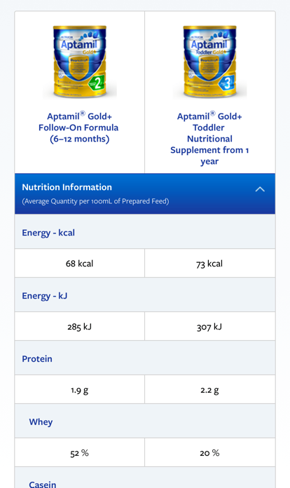
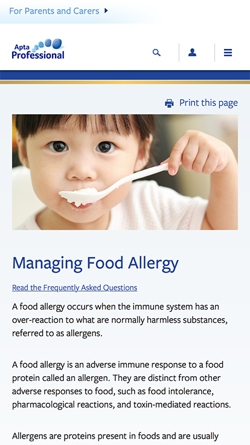
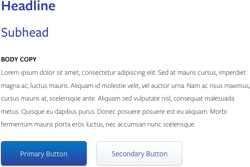

Danone Nutricia were looking for a way to engage with Healthcare Professionals and introduce them to the Aptamil brand. Using the benefits of Aptamil formula as a launching point, it was decided that a comparison tool which showed different brands on equal footing would be able to put Aptamil ahead of the pack in HCPs minds.
The Solution
Informed decisions
Two tools were created, the Product Comparison Tool and the Early Life Nutrition. Both tools work together to help HCPs select the right formula for their patients.

The Product Comparison tool allows HCPs to select up to five formulas and compare their nutritional value. The challenge with designing this table was creating a fully responsive table so HCPs could make easy comparisons no matter what device they were using.
The Early Life Nutrition Navigator presents the user with a series of questions. Depending on the answers selected, an appropriate set of formulas will be presented. These formulas can then be loaded in to the Product Comparison tool and be compared with each other so the right one for the patient can be recommended.
To round out the offering, product and nutritional information are available so HCPs can provide parents with relevant information.

The Process
Integrated workflow
AptaProfessional required a new art direction that felt part of the Aptamil family. Something that was more professional. At first a very different interpretation of the brand was created but after client feedback, a lighter version of the Aptamil palette was chosen.
Creating the front end for this project required creating a robust UI Kit first. A UI Kit is a collection of components that you will use on the site which can then be put together to make the templates. By using this methodology, I was able to speed up the build process and produce much cleaner and modular code.

Other Works
{% include related.html item="mediaportal" collection=site.portfolio %}
{% include related.html item="karinourish" collection=site.portfolio %}